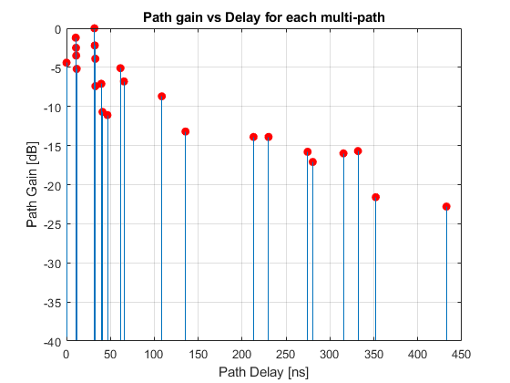
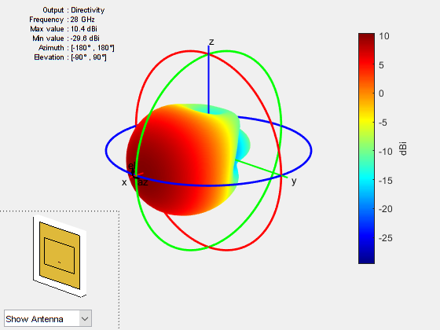
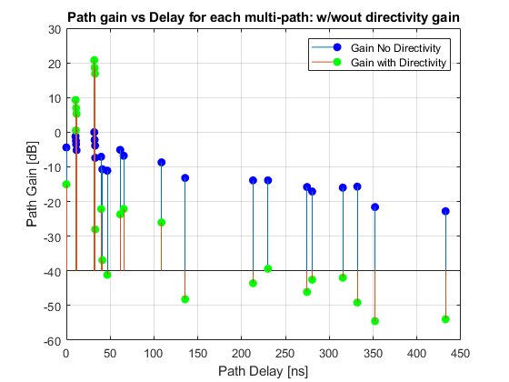
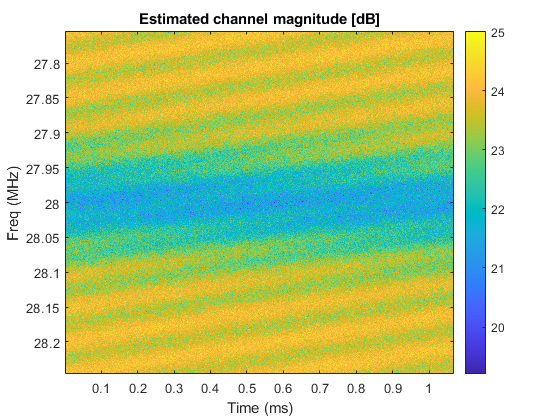
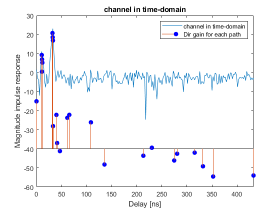
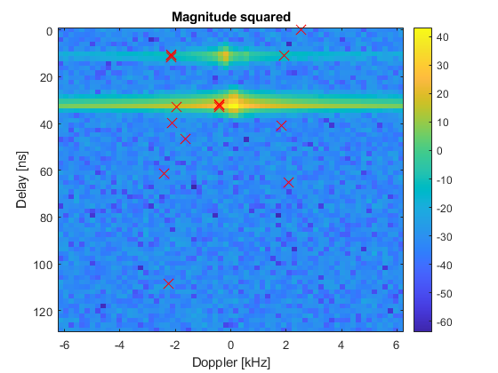

Lab: 5G Channel Sounding with Doppler
Channel sounders are used to measure the channel response between a TX and RX. These are vital to study propagation and are also an excellent tool for debugging the front-end of a transceiver system. In this lab, we will simulate a simple channel sounder over a fading channel with time-variations and Doppler. The very same tools are used in radar.
The digital communications class covered a simpler version of this lab with a static channel.
In doing this lab, you will learn to:
- Describe cluster-delay line (CDL) models
- Get parameters for 5G CDL models using the 5G MATLAB toolbox
- Represent antenna orientations using global and local frames of reference.
- Compute directional gains on paths from the angles
- Implement multi-path fading channels
- Perform simple time-frequency channel sounding
Submission: Complete all the sections marked TODO, and run the cells to make sure your scipt is working. When you are satisfied with the results, publish your code to generate an html file. Print the html file to PDF and submit the PDF.
Contents
- Loading the 3GPP NR channel model
- Patch Element
- Create UE and gNB antennas
- Rotate the UE and gNB antennas
- Get the directivity along the paths
- Compute the Doppler
- Transmitting a channel sounding signal
- Create a multi-path channel object
- Implementing the channel
- Estimating the channel in frequency domain
- Estimating the channel in time-domain
- Bonus: Viewing the channel in delay Doppler space
Loading the 3GPP NR channel model
In this lab, we will simulate a widely-used channel model from 3GPP, the organization that developed the 4G and 5G standards. Specifically, we will use the 5G New Radio cluster delay line model. In the CDL model, the channel is described by a set of path clusters. Each path cluster has various parameters such as an average gain, delay and angles of arrival and departure. The parameters for this model can be loaded with the following commands that are part of the 5G Toolbox.
fc = 28e9; % carrier in Hz dlySpread = 50e-9; % delay spread in seconds chan = nrCDLChannel('DelayProfile','CDL-C',... 'DelaySpread', dlySpread, 'CarrierFrequency', fc, ... 'NormalizePathGains', true); chaninfo = info(chan);
After running the above commands, you will see that the chaninfo data structure has various vectors representing the paramters for each path cluster.
% TODO: Extract the parameters from chaninfo: % gain = average path gain in dB % aoaAz = azimuth angle of arrival % aoaEl = elevation angle of arrival = 90 - ZoA % aodAz = azimuth angle of departure % aodEl = elevation angle of departure = 90 - ZoA % dly = delay of each path gain = chaninfo.AveragePathGains; aoaAz = chaninfo.AnglesAoA; aoaEl = 90 - chaninfo.AnglesZoA; aodAz = chaninfo.AnglesAoD; aodEl = 90 - chaninfo.AnglesZoD; dly = chaninfo.PathDelays; % TODO: Compute and print npath = number of paths npath = length(gain); fprintf(1, 'number of paths = %.2f\n', npath); % TODO: Use the stem() command to plot the gain vs. delay. % Each stem in this plot would represent one multi-path component. % Set 'BaseValue' to -40 so that the stems are easier to see. % Label the delay in ns. figure; stem(dly*1e9,gain,'BaseValue',-40, 'MarkerFaceColor','red','MarkerEdgeColor','red'); ylabel('Path Gain [dB]'); xlabel('Path Delay [ns]'); grid on; title('Path gain vs Delay for each multi-path');
number of paths = 24.00
Patch Element
In this simulation, we will assume the TX and RX patch microstrip antennas. We use the code below to create the antenna element from the antenna demo.
% Constants vp = physconst('lightspeed'); % speed of light lambda = vp/fc; % wavelength % Create a patch element len = 0.49*lambda; groundPlaneLen = lambda; ant = patchMicrostrip(... 'Length', len, 'Width', 1.5*len, ... 'GroundPlaneLength', groundPlaneLen, ... 'GroundPlaneWidth', groundPlaneLen, ... 'Height', 0.01*lambda, ... 'FeedOffset', [0.25*len 0]); % Tilt the element so that the maximum energy is in the x-axis ant.Tilt = 90; ant.TiltAxis = [0 1 0]; ant.show(); ant.pattern(fc);
Create UE and gNB antennas
We will simulate a channel from a base station cell to a mobile device. In 5G terminology, the base station cell is called the gNB and the mobile device is called the UE (don't ask!). We first create a model for the antennas on each device. In reality, both would have an array of elements, but we will just assume one element for each now.
To organize the code better, we have created a class ElemWithAxes to represent the antenna element. This class is basically a wrapper for the AntennaElement class to include a frame of reference and methods to compute gains relative to this frame of reference.
% TODO: Complete the code for the constructor in the ElemWithAxes class % TODO: Create two instances, elemUE and elemgNB, of the ElemWithAxes % class representing the elements at the UE and gNB. elemUE = ElemWithAxes(fc,ant); elemgNB = ElemWithAxes(fc,ant);
Rotate the UE and gNB antennas
The response of the channel will depend on the orientation of the antenna elements. To make this simple, we will assume the UE and gNB elements are aligned to the strongest path. Note that when modifying a class you will need to re-run the constructor.
% TODO: Complete the code in the alignAxes() method of ElemWithAxes. % TODO: Find the index of the path with the maximum gain. [~,idx] = max(gain); % TODO: Call the elemUE.alignAxes() methods to align the UE antenna % to the angle of arrival corresponding to the strongest path. elemUE.alignAxes(aoaAz(idx),aoaEl(idx)); % TODO: Call the elemgNB.alignAxes() methods to align the gNB antenna % to the angle of departure corresponding to the strongest path. elemgNB.alignAxes(aodAz(idx),aodEl(idx));
Get the directivity along the paths
We next compute the directional gains along to the paths. The ElemWithAxes class is derived from a
%<https://www.mathworks.com/help/matlab/system-objects.html MATLAB system % object>, which is MATLAB's base class for objects that can handle dynamic % data. In constructing link-layer simulations, it is useful to build your % classes as system objects. The key method in a system object is the % step() method that is called in each chunk of data. In the derived % class, you define the stepImpl() method which is in turn called in the % step method. For the ElemWithAxes class, we will define the step method % to take angles and return the directivity in dBi. % TODO: Complete the code in the setupImpl() and % stepImpl() method of ElemWithAxes. % TODO: Call the elemUE.step() method with the angles of arrivals of the % paths to get the directivity of the paths on the UE antenna. dirUE = elemUE.step(aoaAz,aoaEl); % TODO: Call the elemgNB.step() method with the angles of departures of the % paths to get the directivity of the paths on the gNB antenna. dirgNB = elemgNB.step(aodAz,aodEl); % TODO: Compute, gainDir, the vector of gains + UE and gNB directivity. gainDir = gain + dirUE + dirgNB; % TODO: Use the stem plot as before to plot both the original gain and % gainDir, the gain with directivity. Add a legend and label the axes. % You will see that, with directivity, many of the paths are highly % attenuated and a few are amplified. figure; stem(dly*1e9,gain,'BaseValue',-40, 'MarkerFaceColor','blue','MarkerEdgeColor','blue'); hold on; stem(dly*1e9,gainDir,'BaseValue',-40, 'MarkerFaceColor','green','MarkerEdgeColor','green'); hold off; ylabel('Path Gain [dB]'); xlabel('Path Delay [ns]'); grid on; legend('Gain No Directivity','Gain with Directivity'); title('Path gain vs Delay for each multi-path: w/wout directivity gain');
Compute the Doppler
We next compute the Doppler for each path.
% TODO: Complete the doppler method in the ElemWithAxes class % TODO: Use the elemUE.set() method to set the mobile velocity to 100 km/h % in the y-direction. Remember to convert from km/h to m/s. vkmh = 100; elemUE.set('vel', convvel([0;vkmh;0],'km/h','m/s')); % TODO: Call the elemUE.doppler() method to find the doppler shifts of all % the paths based on the angle of arrivals dopp = elemUE.doppler(aoaAz,aoaEl);
Transmitting a channel sounding signal
The code is based on the lab in digital communications. As described there, the TX simply repeated transmits a signal of length nfft. Each repetition is called a frame. We will use the following parameters.
fsamp = 4*120e3*1024; % sample rate in Hz nfft = 1024; % number of samples per frame = FFT window nframe = 512; % number of frames
In frequency-domain channel sounding we create the TX samples in frequency domain.
% TODO: Use the qammod function to create nfft random QPSK symbols. % Store the results in x0Fd. M = 4; bits_ps = log2(M); data = randi([0 1],nfft*bits_ps,1); x0Fd = qammod(data,M,'InputType','bit'); % TODO: Take the IFFT of the signal representing the time-domain samples. % Store in x0. x0 = ifft(x0Fd); % TODO: Repeat the data x0 nframe times to create a vector x of length % nframe*nfft x 1. x0_nFrame = repmat(x0,nframe,1);
Create a multi-path channel object
To simulate the multi-path channel, we have started the creation of a class, SISOMPChan. The constructor of the object is already written in a way that you can call construct the channel with parameters with the syntax: chan = SISOMPChan('Prop1', Val1, 'Prop2', val2, ...);
% TODO: Use this syntax to construct a SISOMPChan object with the sample % rate, path delays, path Doppler and directional gains for the channel chan = SISOMPChan('fsamp',fsamp,'gain',gainDir,'dly',dly,'dop',dopp);
Implementing the channel
The SIMOMPChan object derives from the matlab.System class and should implement: * setupImpl(): Called before the first step after the object is constructured * resetImpl(): Called when a simulation starts * releaseImpl(): Called on the first step after a reset() or release() * stepImpl(): Called on each step
% TODO: Complete the implementations of each of these meth % TODO: Run the data through the step. y0 = chan.step(x0_nFrame); % TODO: Add noise 20 dB below the y snr = 20; ynoisy = awgn(y0,snr,'measured');
Estimating the channel in frequency domain
We will now perform a simple channel estimate in frequency-domain
% TODO: Reshape ynoisy into a nfft x nframes matrix and take the FFT of % each column. Store the results in yfd. ynoisy_r = reshape(ynoisy,[nfft,nframe]); yfd = fft(ynoisy_r,[],1); % TODO: Estimate the frequency domain channel by dividing each frame of % yfd by the transmitted frequency domain symbols x0Fd. Store the results % in hestFd hestFd = yfd./x0Fd; % TODO: Plot the estimated channel magnitude in dB. Label the axes in % time and frequency figure; % f = (0:nfft-1)*fsamp/nfft; % t = (0:nfft-1)/fsamp; f = fc-fsamp/2:fsamp/nfft:fc+fsamp/2; t = nfft/fsamp:nfft/fsamp:nfft*nframe/fsamp; hestFd_pow = 10*log10(abs(hestFd)); imagesc(t*1e3, f/1e9, hestFd_pow); xlabel('Time (ms)'); ylabel('Freq (MHz)'); colorbar(); title('Estimated channel magnitude [dB]');
Estimating the channel in time-domain
We next estimate the channel in time-domain
% TODO: Take the IFFT across the columns and store the results in a % matrix hest hest = ifft(hestFd,[],1); % TODO: Plot the magnitude of the samples of the impulse response % in one of the symbols. You should see a few of the paths clearly. % Label the axes in delay in ns. hest_dB = 10*log10(abs(hest)); figure; t2 = (0:nfft-1)/fsamp; plot(t2*1e9, hest_dB(:,20)); hold on; stem(dly*1e9,gainDir,'BaseValue',-40, 'MarkerFaceColor','blue','MarkerEdgeColor','blue'); hold off; xlim([0 max(dly*1e9)]); legend('channel in time-domain','Dir gain for each path'); xlabel('Delay [ns]'); ylabel('Magnitude impulse response'); title('channel in time-domain');
Bonus: Viewing the channel in delay Doppler space
Finally, we can estimate the channel in the delay-Doppler space. This is commonly done in radar and we will use the exactly same procedure here. In the frequency domain response, hestFd, each path results in: * Linear phase rotation across frequency due to delay of the path * Linear phase rotation across time due to Doppler Hence, we can see the paths in the delay-Doppler space with a 2D IFFT.
% TODO: Take a 2D ifft of hestFd and store in a matrix G. G = ifft2(hestFd); % We can now extract the delay-Doppler components from G. % Most of the interesting components in a small area: % nrow = 64; ncol = 32; Gs = [G(1:nrow,nframe-ncol:nframe) G(1:nrow,1:ncol)]; del = t2(1:nrow); step = 2/(t2(end)/2); dopp_v = (-ncol*step:step:ncol*step)*1e-4; % % TODO: Plot the magnitude squared of Gs in dB using imagesc. Label the delay % and doppler axes. You should see the components clearly. Gs_dB = 20*log10(abs(Gs)); figure; imagesc(dopp_v/1e3,del*1e9,Gs_dB); ylabel('Delay [ns]'); xlabel('Doppler [kHz]'); colorbar(); title('Magnitude squared'); % We can even compare the peaks in the matrix Gs with the delay and Doppler % of the actual components. % TODO: Find the indices of the paths with top 20 directional gains. [~,idx] = sort(gainDir, 'descend'); indeces = idx(1:20); dops_p = dopp(indeces); delays_p = dly(indeces); % TODO: On the same plot as above, plot a circle corresponding to the % (doppler,delay) for each of the top components. You may have to reverse % the doppler due to the sign conventions we have used.
figure; imagesc(dopp_v/1e3,del*1e9,Gs_dB); hold on; plot(-dops_p/1e3, delays_p*1e9, 'rx', 'MarkerSize',12); ylabel('Delay [ns]'); xlabel('Doppler [kHz]'); colorbar(); title('Magnitude squared')